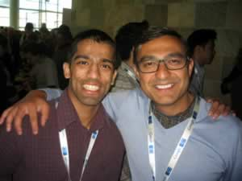

Interesting Facts

I'm an interesting guy and I've done some cool things in my time here at MSU
Here are some other interesting facts and cool things I've done!
- Attended the 2011 Google I/O Developer Conference
- I am obsessed with Android, I've been using Android since the very first device, the T-Mobile G1
- I currently own Three Android Phones, Three Android Tablets, and One Android-based Google TV box
- I just received an honorable mention for my Radio DJ'ing Aircheck at MSU's Impact 89FM. I was the only one from MSU to be recognized in this category
- I have been interning at 89X CIMX-FM, one of the biggest radio stations in the Detroit market for the past few years helping to develop their social media content strategy.
There are probably some other cool things I could talk about but I don't want to bore anyone. I can talk endlessly about technology (specifically Android) and social media dynamics. For more of that you can check out my Twitter and Google+ pages!